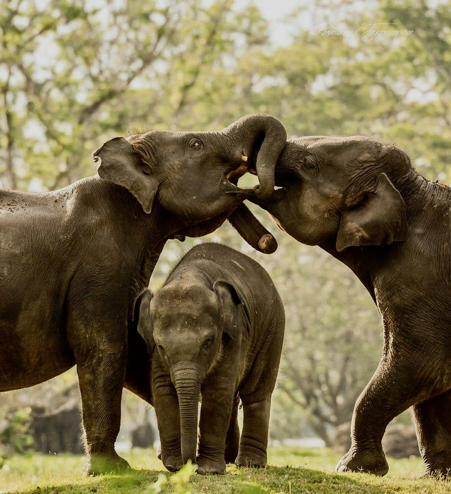
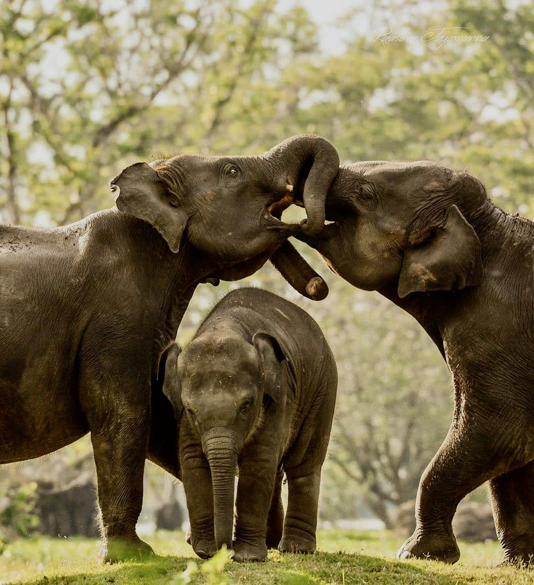

1.Asian Elephant

The largest mammal on the Asian Continent is the Asian elephant.These are mammalian species.Unusually, a grown elephant weighs about 400 pounds.A elepahant often lives for 60 years. With an estimated 5000–7500 elephants, Sri Lanka is home to the biggest population of Asian elephants.The largest brain of any terrestrial mammal in the world can be found in these highly clever creatures. In the past, kings maintained those creatures for both military needs and as a symbol of their regal status.The population of Sri Lankan elephants is confined to dry areas in the country's northeast, east, and southeast.A mature elephant can eat 300 pounds of vegitations in a single day.
2.Sambar deer
The Sambar Deer is a large deer that can be found in various forest environments throughout Southern Asia.In Sri Lanka, Sambur can be found in the majority of the country's woods, from the lowest plains to the highest hills.Sambur are widespread in the Horton Plains, where you may frequently spot them grazing in open areas on every evening.
3.Sri Lankan leopard

The Ceylon leopard or Sri Lanka leopard is a subspecies called Panthera pardus kotiya.The Sri Lanka leopard is one of seven or eight Asian subspecies of leopards.The male Sri Lanka leopard can grow to a length of 110 up to 150 cm and a weight of 55 up to 70 kg. Very big males can reach up to 77 kg. Adult females are significantly smaller, about 32 kg. The estimated number of leopards currently inhabiting Sri Lanka is 600 or 700 individuals.This means, leopards occur in all three major climate and vegetation zones of the island: The highest numbers of Sri Lanka leopards can be found in the dry zone, where almost all wildlife parks are situated. Due to the lack of tigers and lions on the island, leopard are Sri Lanka’s top predator.
4.Sri Lankan Sloth Bear
The Sri Lankan Sloth Bear is a subspecies of the Sloth Bear which is found mainly in lowland dry forests in the island of Sri Lanka.Sri Lankan Sloth Bear has thick shaggy fur that is black colored.Sri Lankan Sloth Bear uses its excellent sense of smell to locate food. They feed predominantly on termites and ants and employ a well-evolved method to dig them out. Their claws are larger than most bear species. Long, curved claws are used for penetrating nest mounds, which can be rock-hard.They are also known to climb up trees to get at bee hives. They will also eat leafy plants, nuts, vegetables and rodents. The Sri Lankan Sloth Bear is highly threatened, with a population less than 1000 in many isolated populations with population decrease.On a global context, the sloth bear is classified as Vulnerable by the IUCN and is listed on CITES
QUICK LINKS
1.Asian Elephant 2.Sambar deer 3.Sri Lankan leopard 4.Sri Lankan Sloth Bear1.Yala National Park.
The Gateway to Yala
The first stop on your journey to the park will likely be at Tissamaharama, a town in the Hambantota district that acts as a gateway to Yala. Here is where a majority of safari drivers pick up eager safari enthusiasts – try to book your trip in advance so that you can avoid having to bargain with safari guides at the last-minute.
From Tissamaharama, your journey continues a further 20 kilometres (approximately 30 mins away) to Palatupana, where a visitor centre is available to provide information for tourists and assign trackers to the safari vehicles. The costs of the safari are easier to manage between several people, so try and travel with friends. From here, you hop into your safari jeep and head off!

Yala National Park contains five blocks, with the two south-eastern coastal blocks being the most frequently visited by the public. The park is also connected to adjoining wildlife sanctuaries and national parks, the largest of which is the Lunugamvehera National Park. Overall, Yala covers an area of 979 square kilometres that hosts a variety of different ecosystems, ranging from jungles to freshwater wetlands, that makes it an ideal home for several species of wildlife.
Yala is home to more than 200 species of birds and 40 species of mammals, but it is probably most well-known for its leopard population. There are more leopards per unit of land in Yala than almost anywhere else in the world, and the park is considered to have far more leopards sightings than any other national park on the island. It is best to visit between January and July to increase your chances of spotting these magnificent creatures.
Elephants can also be spotted at Yala, but the possibility of sighting them varies throughout the season. This is because Lunugamvehera National Park acts as a natural corridor between Yala and Udawalawe National Park, which the elephants use to move between habitats. Your best chance of spotting them is during the dry season, between May and August.
Yala is also home to crocodiles, peacocks, monkeys, sloth bears, water buffalo, wild boar, deer and golden jackals. Around 130 different species of birds have also been recorded in the park, including pelicans, storks, herons and flamingos.


2.Sinharaja Rain Forest
Sinharaja Forest Reserve is located in the South-Western part of the country and covers most of the Kalu Ganga basin and a small part of northern Gin Ganga also. However, the forest expands over the territories of three districts. A prominent fraction of the forest reserve, which is equal to 60 per cent of the total land area, is contained within the borders of the Rathnapura District. The rest is included in the districts of Galle and Kalutara, in equal portions of 20 per cent.
There are multiple points of entrance to the forest, based on the route you are taking. If you are reaching from the Western or the Northern parts of the country, the forest can be accessed via Ratnapura, Kiriella, Kalawana and Weddala. Nonetheless, if you are coming from the Southern part, Deniyaya would be the most accessible. Also, if it is from Hambantota, Udawalawe region, you can enter the forest from the Rakwana side.

Sinharaja forest was accepted by UNESCO as a biosphere reserve in 1978. Recognizing the need for maximum possible 4 protection the site in near declared as a National Heritage Wilderness Area. Being the habitat for rare and endangered species and an outstanding site for study of the process of biological evolution. Sinharaja Forest is the best place to watch mixed species bird flocks. According to a study carried out on the mixed species bird flocks, 42 individual birds occur in the flocks on average which makes this the world’s largest mixed species bird flock. The mixed species Bird flock study of Sinharaja forest has been continuing since 1981 and is considered as the World’s longest bird flock study
The average annual temperature of Sinharaja is approximately 23. 6°C. It annually receives more than 2500mm of rainfall and lies within 38 10-5080mm isohyets. The rainfall is well distributed with peak periods, during the two monsoons, May – July and October – December. There is no dry spell throughout the year.
Preliminary studies on the fauna of Sinharaja have revealed that there is a high degree of endemism among the butterflies, fish, amphibians, reptiles, birds and mammals. In fact 95% of the endemic birds of Sri Lanka are recorded in Sinharaja. Endemism among mammals and butterflies are also greater than 50% Out of the larger mammals, although elephants were said to be ‘common’ in the past, there have not been reports of sightings during the last 15 years. However, there have been reports of sightings of a few animals in the Eastem Scctor.


3.Udawalawe National Park
Gateway to Udawalawe National Park
Udawalawe is located some 164 km south of Colombo. From Colombo, it’s a 3-4 hours drive to Udawalawe. From Ella to Udawalwe, the distance is 94 km, which can be covered through 1-2 hour drive. The park is also well-connected with Hill Country. The distance between the two is 218 km, which takes 5-6 hours to complete
Udawalawe National Park encompasses an area of hectares 32,315 including the Walawe reservoir comprises of micro habitats such as marshes, the Walawe River and its tributaries, woods, and open grasslands. Udawalawe is known for its extensive areas of thick grass, bushes, and trees. Even though the park is mostly made up of grasslands, scrublands, and other types of plains, mountainous and rocky areas can also be found.
Udawalawe National Park is home to 184 species of birds (33 of which are migratory), 94 kinds of plants, 21 fish, 12 amphibians, 33 reptiles, 43 mammals, and 135 species of butterflies, in addition to its amazing population of Asian elephants which is one of the best national parks for wildlife tour in Sri Lanka and bird watching tours in Sri Lanka. Sri Lankan elephants are seeing in open habitats here due to the abundance of open grasslands. The Udawalawe Transit home was established to take care of abandoned elephant calves and being integrating the rescued calves to the wild since 1995. Many other animals such as the rusty spotted cat, Sri Lankan sloth bear, different species of deer, boars etc
Heard of Sri Lankan elephants can be observed in the afternoon at Udawalawe National Park. At times, multiple elephants or even herds of elephants can be seen at Udawalawe. Near rivers and the Udawalawe reservoir, the chances of seeing a herd of Sri Lankan elephants are particularly high.
The dry season in the region is the best time to visit Udawalawe, which falls between the months of May and September. In addition, the neighboring areas of Udawalawe are brimming with additional notable attractions and tourist spots. For example, The Wavulpane Limestone Caves, and the Elephant Transit Home, are all located near the Udawalawe National Park.

 
